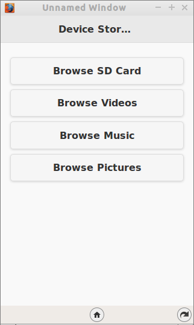
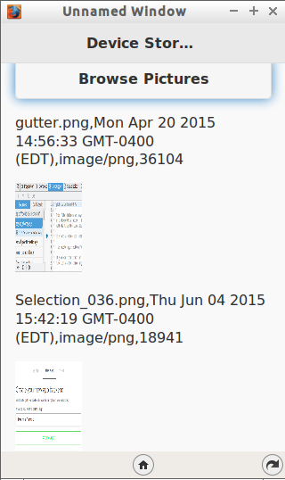
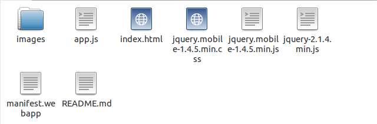

Welcome to Episode 9 of the Firefox OS App Development Tutorial. In the previous episode, we looked at how you can use Web Activities in your Firefox OS Applications. In this episode, we shall look at how you can access device storage in your Firefox OS Apps and we will see how to browse through the content on your SD card, pictures, videos and music areas on your phone.
Let us check out the application in action first to understand what we are trying to do here.
What we shall write is a mobile application that will allow us browse through the files that are present on the different storage areas of the device. These different storage areas include the SD card, pictures, videos, and music. It will give you enough information to see how to access the files, get the file metadata. The episode does not cover how to write or create new files but the Storage API does provide that facility too, should you need that in your application.
All right then, the first screen of the mobile app is shown below:
The screen has 4 buttons that will allow you to browse the contents of the particular device storage area on your phone.
Keep in mind that the SD card browsing will not work on the simulator, but it should work fine on the device. I am able to browse videos, music, and pictures just fine on the simulator.
When you click on the “Browse Music” button, it will access the music storage area and list down the contents. I believe the simulator goes and fetches it from the “Music” folder on the OS that you running it on and, in my case, it lists the files that are there in the “Music” folder. Notice that we list down the files and also other associated meta data like when it was last updated, file type, and the file size.
Similarly, when you click on the “Browse Pictures” button, it will display all the images that are present in the Pictures storage area. I simply show a little preview by creating an image element as shown below. Once again, we not only list the files but also display the meta data: last updated, file type and file size.
I suggest that you begin with a full download of the project source code. Since the project depends on libraries like jQuery and jQuery Mobile, it will save you the hassle of downloading the dependent libraries.
Go ahead & download the code from: https://github.com/anicholakos/DeviceStorage
Extract all the code in some folder. On my machine, the code is present in /home/anicholakos/Projects/DeviceStorage but it could be any directory of your choice. You should see a folder structure inside of DeviceStorage, that looks something like this:
The Device Storage API in Firefox OS is used to access the file system. Until now we had seen how to use persistence in our application via the LocalStorage and IndexedDB APIs and when you use those APIs you are pretty much dealing with storage but at a high level. You are not dealing with individual files and directories and reading/writing to them.
The Device Storage API is just about that. Reading and writing to files directly. The Firefox OS exposes 5 storage areas that you can read and write from. They are:
The first storage area i.e. apps is available for certified applications only. This area is used by applications to read/write their data. We shall not attempt to do anything with that in this episode.
The other four areas stand for pretty much what their names indicate and you can read and write to any of the areas.
The API is fairly simple. All you need to do is invoke the navigator.getDeviceStorage() method and pass the storage area name to it, such as “SD card”, “music”, “pictures”, and “videos”, which will return a DeviceStorage Object that you can use to access the storage area.
You have methods that let you browse/list down the contents of the storage area (which we shall see in the code later on). There are methods available for additional stuff too like:
Keep in mind that access to the storage area is a privileged operation and hence you must define the type of your application as privileged in the manifest.webapp file that we shall see in the next section. Additionally, you will have to specify the permissions (read or readwrite) for each of the storage areas that you wish to access in your application.
OK, let’s get going with understanding the code and how we can access Device Storage in our application.
The first thing we should discuss is the manifest file. This should be familiar now and it has the standard attributes like name, version, etc. There is nothing special happening here.
The permissions are the most important over here. To access the storage areas in Firefox OS, your application needs to be a privileged application, so we are defining that in the “type”: “privileged” entry.
Next we need to mention what permissions our application needs. You have to create an entry for as many storage areas that you want to access in your application and also the type of access that you want i.e. read or readwrite. The readwrite mode will be needed if you plan to create/modify files.
You will notice in the manifest that we have provided readwrite permissions for each of the 4 storage areas (SD card, videos, music, and pictures).
1 2 3 4 5 6 7 8 9 10 11 12 13 14 15 16 17 18 19 20 21 22 23 24 25 | {
"version":"1.0",
"name": "Device Storage",
"description": "This app demonstrates how to use Device Storage",
"launch_path": "/index.html",
"fullscreen": "false",
"icons": {
"16": "/images/icon_016.png",
"32": "/images/icon_032.png",
"48": "/images/icon_048.png",
"128": "/images/icon_128.png"
},
"developer": {
"name": "Romin Irani",
"url": "http://www.rominirani.com"
},
"default_locale": "en",
"type": "privileged",
"permissions": {
"device-storage:videos": { "access": "readwrite" },
"device-storage:pictures":{ "access": "readwrite" },
"device-storage:sdcard": { "access": "readwrite" },
"device-storage:music": { "access": "readwrite" }
}
}
|
Next up is the index.html page and it is a simple jQuery Mobile page.
1 2 3 4 5 6 7 8 9 10 11 12 13 14 15 16 17 18 19 20 21 22 23 24 25 26 27 28 29 30 31 32 33 34 | <!DOCTYPE html>
<html>
<head>
<meta charset="utf-8">
<meta name="viewport" content="width=device-width, initial-scale=1.0, maximum-scale=1.0,user-scalable=0">
<title>Notes</title>
<link rel="stylesheet" href="jquery.mobile-1.4.5.min.css" />
<script src="jquery-2.1.4.min.js"></script>
<script src="jquery.mobile-1.4.5.min.js"></script>
<script src="app.js"></script>
</head>
<body>
<!-- Start of first page: #home -->
<div data-role="page" id="home">
<div data-role="header" data-position="fixed" id="header">
<h3>Device Storage</h3>
</div><!-- /header -->
<div data-role="content">
<a href="#" id="browseSDCard" data-role="button" class="big">Browse SD Card</a>
<a href="#" id="browseVideos" data-role="button" class="big">Browse Videos</a>
<a href="#" id="browseMusic" data-role="button" class="big">Browse Music</a>
<a href="#" id="browsePictures" data-role="button" class="big">Browse Pictures</a>
<div id="results"></div>
</div><!-- /content -->
</div><!-- /page home -->
</body>
</html>
|
Let us discuss the index.html page in detail now:
1 2 3 4 5 6 7 8 9 10 11 12 13 14 15 16 17 18 19 20 21 22 23 24 25 26 27 28 29 30 31 32 33 34 35 36 37 38 | function listContents(storagename) {
//Clear up the list first
$('#results').html("");
var files = navigator.getDeviceStorage(storagename);
var cursor = files.enumerate();
cursor.onsuccess = function() {
//alert("Got something");
var file = this.result;
if (file != null) {
var imageElement = $('<img height="100" width="75">');
imageElement.attr('src', window.URL.createObjectURL(file));
$("<p>" + file.name + "," + file.lastModifiedDate + "," +
file.type + "," + file.size + "</p>").appendTo(
'#results');
imageElement.appendTo("#results");
this.done = false;
} else {
this.done = true;
}
if (!this.done) {
this.continue();
}
}
}
$(document).ready(function() {
$("#browseSDCard").click(function() {
listContents('sdcard');
});
$("#browseVideos").click(function() {
listContents('videos');
});
$("#browseMusic").click(function() {
listContents('music');
});
$("#browsePictures").click(function() {
listContents('pictures');
});
});
|
Let us discuss the source code in detail now.
This completes our discussion of writing Firefox OS applications that access Device Storage. Now comes the part of seeing it actually work. All we need to test out this application is:
Steps to install the application in your Firefox OS Simulator should be familiar to you now. Simply launch the Firefox OS Simulator in your Firefox Browser. From the Dashboard, click on the “Add Directory” button and point it to the manifest.webapp file for the DeviceStorage application. On successful validation, the application will be installed and it will come up in your OS Simulator. For sample screenshots, refer to the section at the beginning of this blog post for Episode 9 in Action.
Device Storage is a key feature that you can use to write your own files and also create applications like File Explorer, etc. It can also be used to have a better control in imaging applications, where you want to access all the files present, and read/write to them via your own code. I recommend going through the official documentation on Device Storage and try to create a file, etc.
Keep in mind not to use the Device Storage as a general mechanism for persistence. If you want to build application level persistence in your application, it is recommended that you still use LocalStorage and/or IndexedDB API.
Until the next episode, stay tuned and give me feedback.
{kind=link}
{kind=link}
{kind=link}